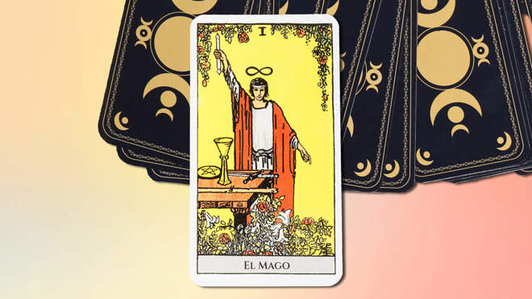

¿Qué es el tarot?

El tarot es una herramienta o método de adivinación, que consiste en utilizar una baraja — compuesta
por un total de 78 cartas si la utilizamos al completo o solo 22 cartas si nos centramos en los arcanos
mayores— para dar respuestas a preguntas, guiar decisiones o prevenir el futuro.
Pero primero hemos de preguntarnos: ¿es aconsejable echarse las cartas una misma o es mejor acudir
a una profesional? Cuando estás en esa fase en la que todavía estás aprendiendo el significado de cada
carta y a echarlas, lo mejor que puedes hacer es acudir a una profesional. Una tarotista te dará una
perspectiva diferente y, además, podrás ver cómo lo hace y aprender de ella (o de él, que también los hay).
Lo más difícil de leer las cartas es construir una interpretación completa y exacta a partir de la
disposición de las cartas sobre la mesa. Echar las cartas del tarot consiste en algo más que en sumar
sus valores o hacerlo de una manera determinada. Aprender a interpretarlas lleva su tiempo y mucha práctica.
También es importante lo que TÚ puedas aportar al proceso, porque no hay dos interpretaciones iguales.
Puedes sentarte y estudiar las cartas todo el tiempo que quieras, tomar notas… Pero en algún momento,
tendrás que combinar sus significados para elaborar una respuesta coherente para la persona que te consulta.
Esta es la razón por la que echar las cartas requiere tanta práctica y constancia.
Leer más...
¿Qué preguntas puedes hacer a las cartas de tarot?
Si eres aficionada al horóscopo y a la ciencia que se esconde tras tu carta astral, seguramente también te
interesen las cartas del tarot. Lo mejor del tarot es que puedes preguntar sobre cualquier cosa. No existe
ninguna limitación en cuanto a los problemas que el tarot puede ayudarnos a resolver y entender, aunque
normalmente se distinguen en cuatro ámbitos: amor, trabajo, dinero y salud. En mi caso, puede que haya una
que, como tarotista, son las únicas cuestiones a las que no respondo: las relacionadas con la salud (creo
que los que mejor pueden contestarlas son los profesionales de la medicina). Las respuestas están ahí fuera
esperándonos, sólo hay que encontrar el camino para acceder a ellas. Como dice Horóscopo Negro en la guía
del tarot de Isa Muguruza, lo que algunos no saben es que el futuro está dentro de nosotros, en nuestra
psique, en nuestro actos, y el tarot es la herramienta que, de algún modo, nos ayuda a captar el momento
antes de que suceda. Así que si quieres recurrir al tarot antes de tomar una decisión importante o
saber qué serie de televisión es la próxima que deberías ver, esto es lo que debes saber.
Leer más...
Origenes antiguos
El tarot tiene sus raíces en el siglo XV en Europa, aunque algunos rastrean sus orígenes hasta el antiguo
Egipto o la China imperial. Sin embargo, la evidencia histórica más sólida sitúa la creación de las primeras
cartas del tarot en Italia durante el Renacimiento. Inicialmente, las cartas eran utilizadas como un juego
de naipes, pero a medida que se extendió por toda Europa, empezaron a adquirir connotaciones místicas.
Leer más...
El tarot a traves de las culturas

A lo largo de los años, el tarot como adivinación milenaria ha trascendido fronteras culturales y se ha
integrado en diversas tradiciones espirituales. Desde la astrología hasta la cábala, el tarot ha sido
vinculado con una variedad de sistemas simbólicos y filosofías místicas. Su versatilidad ha permitido
que diferentes culturas adopten y adapten el tarot a sus propias creencias y prácticas espirituales.
En el siglo XXI, el interés en el tarot ha experimentado un resurgimiento significativo. A pesar de
vivir en una era de avances tecnológicos y racionalismo, las personas siguen buscando respuestas más
allá de lo tangible. El tarot ofrece una manera de explorar la espiritualidad y la autoconciencia en
un mundo que a menudo parece desconectado de lo místico.
La popularidad del tarot se ha visto impulsada por las redes sociales y la accesibilidad de recursos
en línea. Muchos entusiastas comparten sus experiencias, tiradas de cartas y conocimientos, creando
comunidades en línea donde la práctica del tarot es celebrada y explorada.
Leer más...
¿Cuántas cartas del tarot hay?

Lo primero que debemos saber para poder usar el tarot adecuadamente es conocer su composición. Como
bien sabes, estamos hablando de una baraja de cartas. Pero lo que quizá no sabías es que, a diferencia
de los naipes, está compuesta por 78 de ellas.
Por un lado, tenemos los arcanos menores. Son 56 cartas divididas en catorce números (del uno al Rey)
y cuatro palos. Estos son copas, espadas, bastos y oros. Es decir, al menos hasta aquí la baraja es
similar a la española.
Pero luego se añaden otras 22 cartas, conocidas como arcanos mayores. Estas cartas se introdujeron
durante el Renacimiento en el tarot, utilizándose como bases de un juego en el que se emplean alegorías
y metáforas. Con el tiempo, sus significados se tomaron como referencia para desvelar el porvenir del
futuro. De todas ellas hablaremos detenidamente más adelante.
Significado de las cartas del Tarot: los 22 arcanos mayores
En su origen, las cartas del tarot se utilizaban para jugar a las cartas. En medio de este mundo lúdico,
aparecen los arcanos mayores. Cartas que representan conceptos e ideas abstractas, qué tiempo atrás
siguen usándose como herramienta adivinatoria.
La pregunta es… ¿Usamos siempre estas cartas para las tiradas del tarot? Por lo general, los arcanos
mayores se utilizan en tres ocasiones:
- Lecturas generales: durante la lectura general, los arcanos mayores aportan una visión amplia y
profunda de la situación. Representa arquetipos poderosos y aspectos fundamentales de la vida.
- Lecturas específicas: cuando hacemos una tirada sobre un área específica de la vida, los arcanos mayores
nos ofrecen una perspectiva más profunda del asunto. Revelan información esencial que puede orientarnos sobre
los aspectos más relevantes a tener en cuenta.
- Momentos claves: estas cartas también se usan en los momentos cruciales de la vida, para tomar decisiones
importantes, superar transiciones profundas o asumir cambios significativos. Nos ayudan a iluminar todos
los caminos posibles, a analizar las influencias externas y aprender lecciones clave.
En cambio, cuando hacemos lecturas simples o preguntas muy específicas, estas cartas pueden no resultar de
utilidad.
Ahora vamos a repasar rápidamente el significado de cada arcano mayor. Pero recuerda que la interpretación
de cada carta puede variar en función de la tirada y la intuición de quien hace la lectura.
Leer más...
El Mago

El Mago en el Tarot significa poder creativo y personal. Es el primer arcano de la jerarquía y, por lo tanto,
es el primer paso en la búsqueda de la sabiduría. Esta carta representa el alma del deseo, el primer escalón
que debemos subir en busca de la autorrealización.
Dependiendo de su posición, puede significar:
- Al derecho: es una carta auspiciosa, que marca el comienzo de algo nuevo. Está relacionada con la imaginación
y la originalidad, habilidades que pueden emplearse para el bien o para el mal.
- Invertida: representa el rechazo al compromiso. Estás buscando una forma fácil de escapar. Indica debilidad.
Leer más...
La estrella

La Estrella en el Tarot significa esperanza, inspiración e iluminación. Es la representación de la conexión con el
universo, la fe en el futuro y la guía divina. Esta carta inicia el ascenso místico del alma a través de los cuerpos
celestes, en búsqueda de iluminación espiritual.
Dependiendo de su posición, puede significar:
equilibrio adecuado. Los resultados son favorables.
Invertida: indica decepción, desequilibrio y pesimismo.
Leer más...
Los enamorados

Los Enamorados en el Tarot significa el amor, la elección y la armonía en las relaciones. Es la representación de la toma de decisiones y la unión espiritual. Esta carta personifica el deseo más allá de la razón.
Dependiendo de su posición, puede significar:
Al derecho: armonía, amor, confianza, honor, gozo y satisfacción de los deseos. Puede indicar el inicio de una nueva relación o el de una nueva fase en una ya existente.
Invertida: señala inconstancia y falta de confianza.
Leer más...
El colgado

El Colgado en el Tarot significa entrega, renuncia y suspensión. Representa la necesidad de hacer sacrificios, ver las cosas desde una perspectiva diferente y aceptar la espera. Esta carta está relacionada con el dolor y la pérdida del ego que el alma necesita para completar su búsqueda espiritual.
Dependiendo de su posición, puede significar:
Al derecho: representa sufrimiento y vergüenza, pérdida de ego, autoestima y riqueza material. Es el aviso de un periodo en el limbo entre acontecimientos importantes. También puede señalar la suspensión de toda acción, la transición y el cambio de camino. Se la relaciona con el sacrificio y el arrepentimiento.
Invertida: señala un sacrificio inútil, así como la incapacidad de dar lo que se necesita. Significa egoísmo.
Leer más...